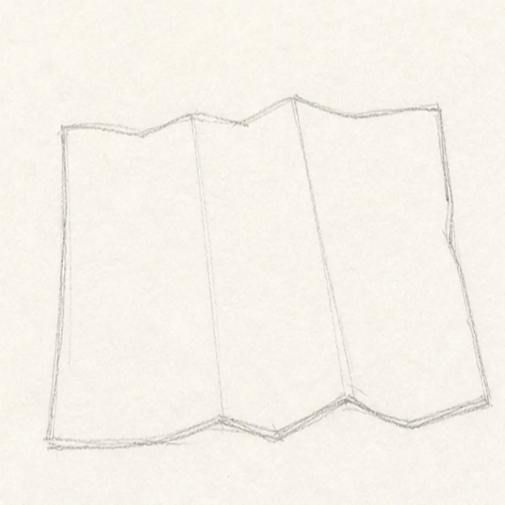
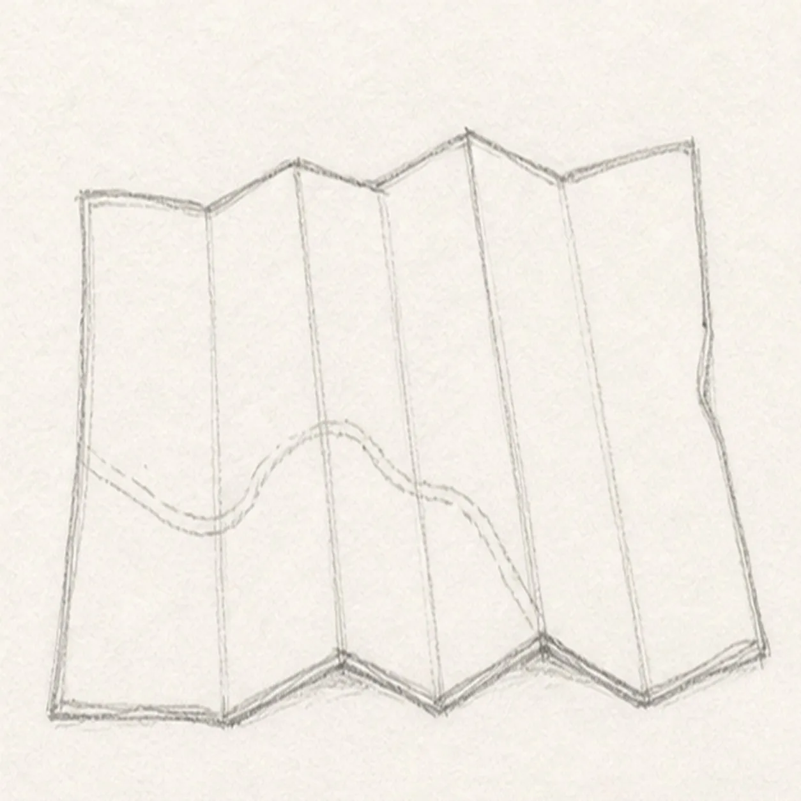
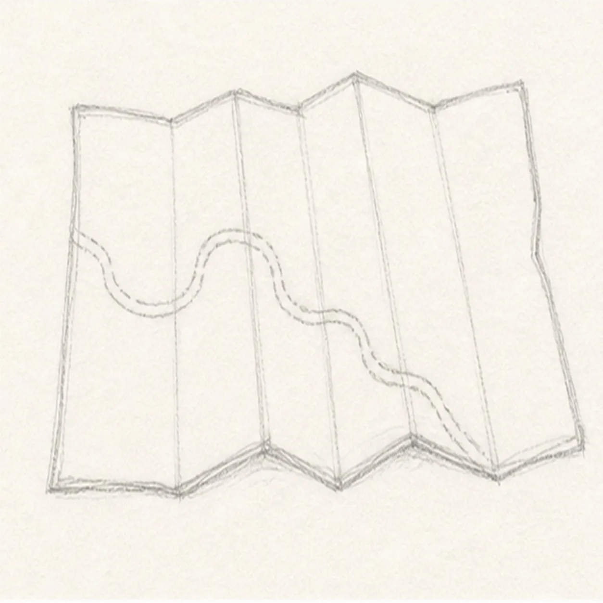
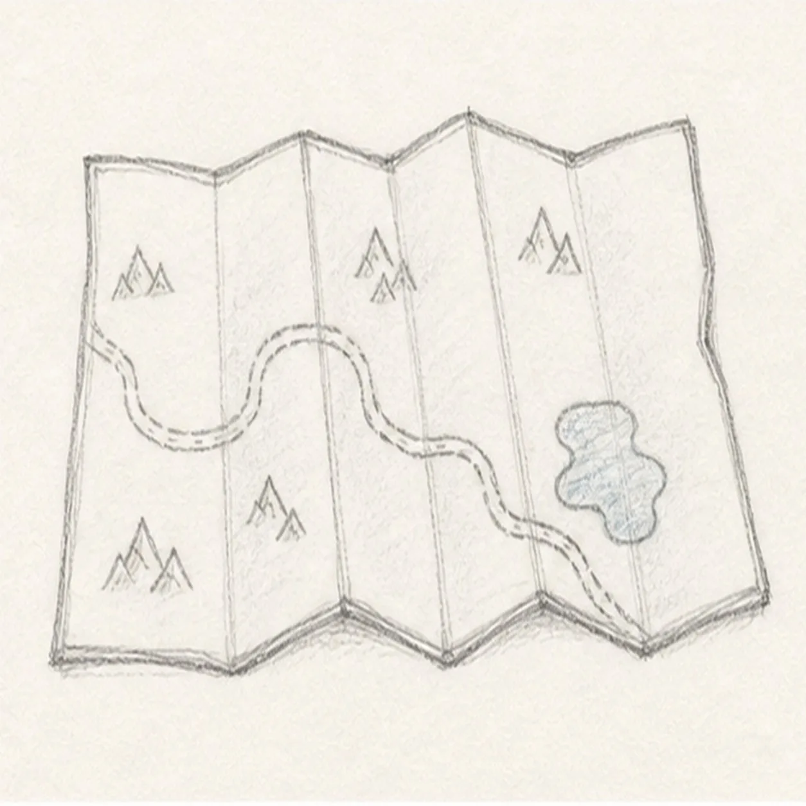
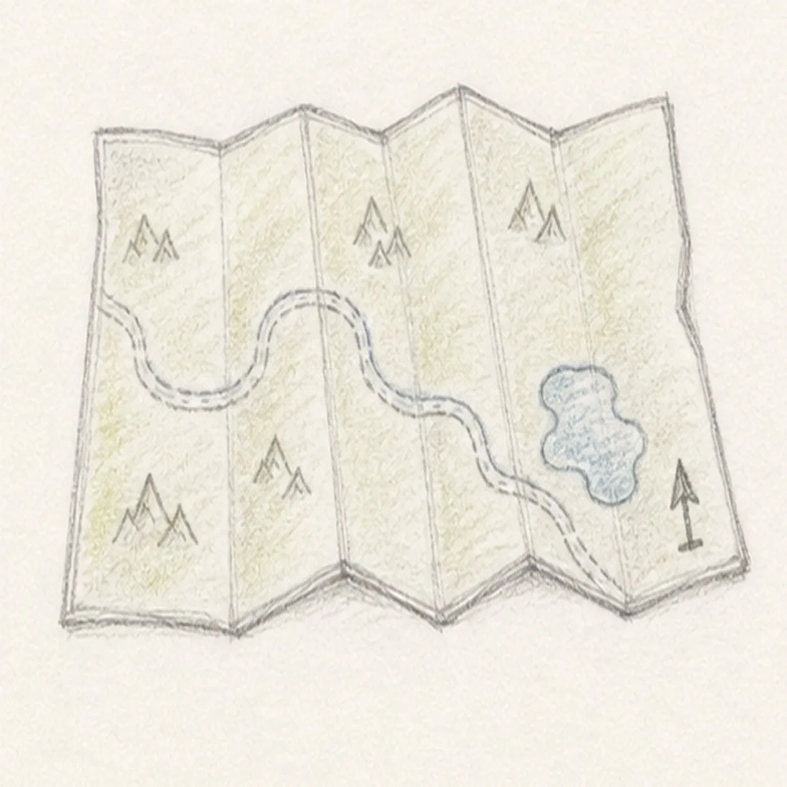

From the archive
Let's draw a folded camp map
Treat this as one small practice round: build the subject lightly, notice the shapes, then darken only the lines that help the finished sketch.
-
01

Block the map sheet
Draw a wide paper outline with slightly uneven edges, then mark the top and bottom fold peaks lightly.
Sketch tip: Keep the outside shape simple. A readable folded map starts with a strong paper silhouette.
-
02

Score the folds
Add vertical and diagonal crease lines that divide the paper into folded panels.
Sketch tip: Let every crease connect to the outer edge. Floating fold lines make the paper look flat.
-
03

Draw the trail
Sketch a winding trail line across several panels, letting it bend over the creases.
Sketch tip: Curve the route gently. A trail that snakes too tightly can crowd the small map.
-
04

Add land marks
Place a small lake on one panel and a few tiny mountain icons away from the trail.
Sketch tip: Use simple landmark shapes. The lesson is about a map, not detailed landscape drawing.
-
05

Tint the map
Add a small compass arrow without letters, then shade the existing land and lake with restrained green and blue.
Sketch tip: Keep the color light enough that the trail and fold lines remain easy to see.
-
06

Finish the folded camp map
Darken the keeper contours, clarify the folds, route, lake, mountains, and compass arrow, and deepen the existing color.
Sketch tip: Stop before adding place names or extra symbols. A text-free map stays cleaner for a quick sketch lesson.